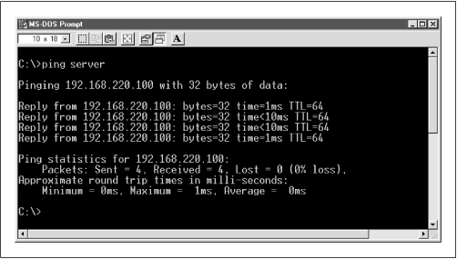
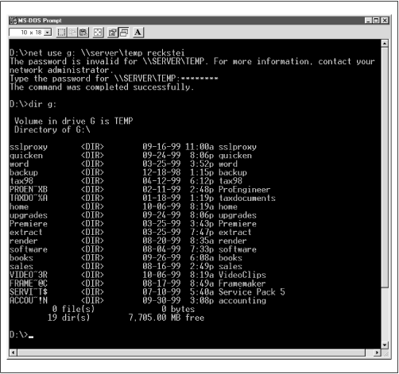
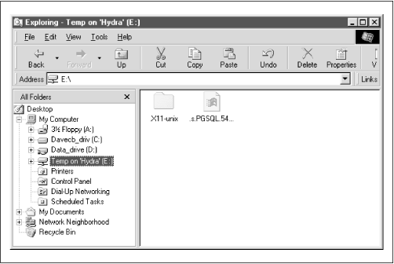
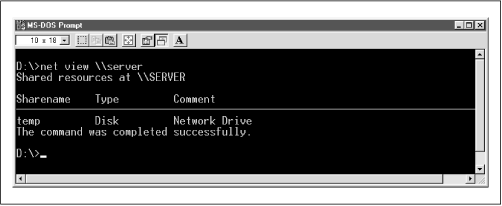
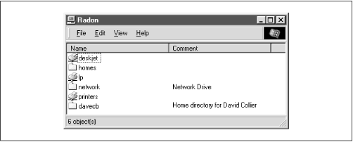

Using Samba
Robert Eckstein, David Collier-Brown, Peter Kelly1st Edition November 1999
1-56592-449-5, Order Number: 4495
416 pages, $34.95
|
|
Using SambaRobert Eckstein, David Collier-Brown, Peter Kelly1st Edition November 1999 1-56592-449-5, Order Number: 4495 416 pages, $34.95 |
9.2 The Fault Tree
The fault tree is for diagnosing and fixing problems that occur when you're installing and reconfiguring Samba. It's an expanded form of a trouble and diagnostic document that is part of the Samba distribution.
Before you set out to troubleshoot any part of the Samba suite, you should know the following information:
For clarity, we've renamed the server in the following examples to server.example.com, and the client machine to client.example.com.
9.2.1 How to use the fault tree
Start the tests here, without skipping forward; it won't take long (about five minutes) and may actually save you time backtracking. Whenever a test succeeds, you will be given a section name and page number to which you can safely skip.
9.2.2 Troubleshooting Low-level IP
The first series of tests is that of the low-level services that Samba needs in order to run. The tests in this section will verify that:
Subsequent sections will add TCP software, the Samba daemons smbd and nmbd, host-based access control, authentication and per-user access control, file services, and browsing. The tests are described in considerable detail in order to make them understandable by both technically oriented end users and experienced systems and network administrators.
9.2.2.1 Testing the networking software with ping
The first command to enter on both the server and the client is
ping 127.0.0.1. This is the loopback address and testing it will indicate whether any networking support is functioning at all. On Unix, you can useping127.0.0.1with the statistics option and interrupt it after a few lines. On Sun workstations, the command is typically/usr/etc/ping-s127.0.0.1; on Linux, justping127.0.0.1. On Windows clients, runping127.0.0.1in an MS-DOS window and it will stop by itself after four lines.Here is an example on a Linux server:
server%ping 127.0.0.1PING localhost: 56 data bytes 64 bytes from localhost (127.0.0.1): icmp-seq=0. time=1. ms 64 bytes from localhost (127.0.0.1): icmp-seq=1. time=0. ms 64 bytes from localhost (127.0.0.1): icmp-seq=2. time=1. ms ^C ----127.0.0.1 PING Statistics---- 3 packets transmitted, 3 packets received, 0% packet loss round-trip (ms) min/avg/max = 0/0/1If you get "ping: no answer from..." or "100% packet loss," you have no IP networking at all installed on the machine. The address
127.0.0.1is the internal loopback address and doesn't depend on the computer being physically connected to a network. If this test fails, you have a serious local problem. TCP/IP either isn't installed or is seriously misconfigured. See your operating system documentation if it is a Unix server. If it is a Windows client, follow the instructions in Chapter 3, Configuring Windows Clients, to install networking support.If you're the network manager, some good references are Craig Hunt's TCP/IP Network Administration, Chapter 11, and Craig Hunt & Robert Bruce Thompson's new book, Windows NT TCP/IP Network Administration, both published by O'Reilly.
9.2.2.2 Testing local name services with ping
Next, try to ping
localhoston the Samba server.localhostis the conventional hostname for the 127.0.0.1 loopback, and it should resolve to that address. After typingpinglocalhost, you should see output similar to the following:server%ping localhostPING localhost: 56 data bytes 64 bytes from localhost (127.0.0.1): icmp-seq=0. time=0. ms 64 bytes from localhost (127.0.0.1): icmp-seq=1. time=0. ms 64 bytes from localhost (127.0.0.1): icmp-seq=2. time=0. ms ^CIf this succeeds, try the same test on the client. Otherwise:
If you get "unknown host: localhost," there is a problem resolving the host name localhost into a valid IP address. (This may be as simple as a missing entry in a local hosts file.) From here, skip down to the section Section 9.2.8, Troubleshooting Name Services.
If you get "ping: no answer," or "100% packet loss," but pinging 127.0.0.1 worked, then name services is resolving to an address, but it isn't the correct one. Check the file or database (typically /etc/hosts on a Unix system) that the name service is using to resolve addresses to ensure that the entry is corrected.
9.2.2.3 Testing the networking hardware with ping
Next, ping the server's network IP address from itself. This should get you exactly the same results as pinging 127.0.0.1:
server%ping 192.168.236.86PING 192.168.236.86: 56 data bytes 64 bytes from 192.168.236.86 (192.168.236.86): icmp-seq=0. time=1. ms 64 bytes from 192.168.236.86 (192.168.236.86): icmp-seq=1. time=0. ms 64 bytes from 192.168.236.86 (192.168.236.86): icmp-seq=2. time=1. ms ^C ----192.168.236.86 PING Statistics---- 3 packets transmitted, 3 packets received, 0% packet loss round-trip (ms) min/avg/max = 0/0/1If this works on the server, repeat it for the client. Otherwise:
If
pingnetwork_ipfails on either the server or client, but ping 127.0.0.1 works on that machine, you have a TCP/IP problem that is specific to the Ethernet network interface card on the computer. Check with the documentation for the network card or the host operating system to determine how to correctly configure it. However, be aware that on some operating systems, the ping command appears to work even if the network is disconnected, so this test doesn't always diagnose all hardware problems.9.2.2.4 Testing connections with ping
Now, ping the server by name (instead of its IP address), once from the server and once from the client. This is the general test for working network hardware:
server%ping serverPING server.example.com: 56 data bytes 64 bytes from server.example.com (192.168.236.86): icmp-seq=0. time=1. ms 64 bytes from server.example.com (192.168.236.86): icmp-seq=1. time=0. ms 64 bytes from server.example.com (192.168.236.86): icmp-seq=2. time=1. ms ^C ----server.example.com PING Statistics---- 3 packets transmitted, 3 packets received, 0% packet loss round-trip (ms) min/avg/max = 0/0/1On Microsoft Windows, a ping of the server would look like Figure 9.1.
Figure 9.1: Pinging the Samba server from a Windows client
If successful, this test tells us five things:
The hostname (e.g., "server") is being found by your local nameserver.
The hostname has been expanded to the full name (e.g., server.example.com).
The client has sent the Samba server four 56-byte UDP/IP packets.
If this test isn't successful, there can be one of several things wrong with the network:
First, if you get "ping: no answer," or "100% packet loss," you're not connecting to the network, the other machine isn't connecting, or one of the addresses is incorrect. Check the addresses that the
pingcommand reports on each machine, and ensure that they match the ones you set up initially.If not, there is at least one mismatched address between the two machines. Try entering the command
arp-a, and see if there is an entry for the other machine. Thearpcommand stands for the Address Resolution Protocol. Thearp-acommand lists all the addresses known on the local machine. Here are some things to try:If you receive a message like "192.168.236.86 at (incomplete)," the Ethernet address of 192.168.236.86 is unknown. This indicates a complete lack of connectivity, and you're likely having a problem at the very bottom of the TCP/IP Network Administration protocol stack, at the Ethernet-interface layer. This is discussed in Chapters 5 and 6 of TCP/IP Network Administration (O'Reilly).
If you receive a response similar to "server (192.168.236.86) at 8:0:20:12:7c:94," then the server has been reached at some time, or another machine is answering on its behalf. However, this means that ping should have worked: you may have an intermittent networking or ARP problem.
If the IP address from ARP doesn't match the addresses you expected, investigate and correct the addresses manually.
If each machine can ping itself but not another, something is wrong on the network between them.
If you get "ping: network unreachable" or "ICMP Host Unreachable," then you're not receiving an answer and there is likely more than one network involved.
In principle, you shouldn't try to troubleshoot SMB clients and servers on different networks. Try to test a server and client on the same network. The three tests that follow assume you might be testing between two networks:
First, perform the tests for no answer described earlier in this section. If this doesn't identify the problem, the remaining possibilities are the following: an address is wrong, your netmask is wrong, a network is down, or just possibly you've been stopped by a firewall.
Check both the address and the netmasks on source and destination machines to see if something is obviously wrong. Assuming both machines really are on the same network, they both should have the same netmasks and ping should report the correct addresses. If the addresses are wrong, you'll need to correct them. If they're right, the programs may be confused by an incorrect netmask. See Section 9.2.9.1, Netmasks, later in this chapter.
If the commands are still reporting that the network is unreachable and neither of the previous two conditions is in error, one network really may be unreachable from the other. This, too, is a network manager issue.
If you get "ICMP Administratively Prohibited," you've struck a firewall of some sort or a misconfigured router. You will need to speak to your network security officer.
If you get "ICMP Host redirect," and ping reports packets getting through, this is generally harmless: you're simply being rerouted over the network.
If you get a host redirect and no ping responses, you are being redirected, but no one is responding. Treat this just like the "Network unreachable" response and check your addresses and netmasks.
If you get "ICMP Host Unreachable from gateway gateway_name," ping packets are being routed to another network, but the other machine isn't responding and the router is reporting the problem on its behalf. Again, treat this like a "Network unreachable" response and start checking addresses and netmasks.
If you get "ping: unknown host hostname," your machine's name is not known. This tends to indicate a name-service problem, which didn't affect
localhost. Have a look at Section 9.2.8, later in this chapter.If you get a partial success, with some pings failing but others succeeding, you either have an intermittent problem between the machines or an overloaded network. Ping for longer, and see if more than about 3 percent of the packets fail. If so, check it with your network manager: a problem may just be starting. However, if only a few fail, or if you happen to know some massive network program is running, don't worry unduly. Ping's ICMP (and UDP) are designed to drop occasional packets.
If you get a response like "smtsvr.antares.net is alive" when you actually pinged client.example.com, you're either using someone else's address or the machine has multiple names and addresses. If the address is wrong, name service is clearly the culprit; you'll need to change the address in the name service database to refer to the right machine. This is discussed in Section 9.2.8, later in this chapter.
Server machines are often multihomed : connected to more than one network, with different names on each net. If you are getting a response from an unexpected name on a multihomed server, look at the address and see if it's on your network (see the section Section 9.2.9.1, later in this chapter). If so, you should use that address, rather than one on a different network, for both performance and reliability reasons.
Servers may also have multiple names for a single Ethernet address, especially if they are web servers. This is harmless, if otherwise startling. You probably will want to use the official (and permanent) name, rather than an alias which may change.
If everything works, but the IP address reported is 127.0.0.1, you have a name service error. This typically occurs when a operating system installation program generates an /etc/hosts line similar to
127.0.0.1localhosthostnamedomainname. The localhost line should say127.0.0.1localhostor127.0.0.1localhostloghost. Correct it, lest it cause failures to negotiate who is the master browse list holder and who is the master browser. It can, also cause (ambiguous) errors in later tests.If this worked from the server, repeat it from the client.
9.2.3 Troubleshooting TCP
Now that you've tested IP, UDP, and a name service with ping, it's time to test TCP. ping and browsing use ICMP and UDP; file and print services (shares) use TCP. Both depend on IP as a lower layer and all four depend on name services. Testing TCP is most conveniently done using the FTP (file transfer protocol) program.
9.2.3.1 Testing TCP with FTP
Try connecting via FTP, once from the server to itself, and once from the client to the server:
server%ftp serverConnected to server.example.com. 220 server.example.com FTP server (Version 6.2/OpenBSD/Linux-0.10) ready. Name (server:davecb): 331 Password required for davecb. Password: 230 User davecb logged in. ftp>quit221 Goodbye.If this worked, skip to the section Section 9.2.4, Troubleshooting Server Daemons. Otherwise:
If you received the message "server: unknown host," then nameservice has failed. Go back to the corresponding ping step, Section 9.2.2.2, Testing local name services with ping , and rerun those tests to see why name lookup failed.
If you received "ftp: connect: Connection refused," the machine isn't running an FTP daemon. This is mildly unusual on Unix servers. Optionally, you might try this test by connecting to the machine using telnet instead of FTP; the messages are very similar and telnet uses TCP as well.
If there was a long pause, then "ftp: connect: Connection timed out," the machine isn't reachable. Return to the section Section 9.2.2.4, Testing connections with ping.
If you received "530 Logon Incorrect," you connected successfully, but you've just found a different problem. You likely provided an incorrect username or password. Try again, making sure you use your username from the Unix server and type your password correctly.
9.2.4 Troubleshooting Server Daemons
Once you've confirmed that TCP networking is working properly, the next step is to make sure the daemons are running on the server. This takes three separate tests because no single one of the following will decisively prove that they're working correctly.
To be sure they're running, you need to find out if:
9.2.4.1 Before you start
First, check the logs. If you've started the daemons, the message "smbd version some_number started" should appear. If it doesn't, you will need to restart the Samba daemons.
If the daemon reports that it has indeed started, look out for "bind failed on port 139 socket_addr=0 (Address already in use)". This means another daemon has been started on port 139 (smbd). Also, nmbd will report a similar failure if it cannot bind to port 137. Either you've started them twice, or the inetd server has tried to provide a daemon for you. If it's the latter, we'll diagnose that in a moment.
9.2.4.2 Looking for daemon processes with ps
Next, you need to see if the daemons have been started. Use the
pscommand on the server with thelongoption for your machine type (commonlypsaxorps-ef), and see if you have either smbd and nmbd already running. This often looks like the following:server%ps axPID TTY STAT TIME COMMAND 1 ? S 0:03 init [2] 2 ? SW 0:00 (kflushd) (...many lines of processes...) 234 ? S 0:14 nmbd -D3 237 ? S 0:11 smbd -D3 (...more lines, possibly including more smbd lines...)This example illustrates that smbd and nmbd have already started as stand-alone daemons (the
-Doption) at log level 3.9.2.4.3 Looking for daemons bound to ports
Next, the daemons have to be registered with the operating system so they can get access to TCP/IP ports. The
netstatcommand will tell you if this has been done. Run the commandnetstat-aon the server, and look for lines mentioningnetbios,137or139:server%netstat -aActive Internet connections (including servers) Proto Recv-Q Send-Q Local Address Foreign Address (state) udp 0 0 *.netbios- *.* tcp 0 0 *.netbios- *.* LISTEN tcp 8370 8760 server.netbios- client.1439 ESTABLISHEDor:
server%netstat -aActive Internet connections (including servers) Proto Recv-Q Send-Q Local Address Foreign Address (state) udp 0 0 *.137 *.* tcp 0 0 *.139 *.* LISTEN tcp 8370 8760 server.139 client.1439 ESTABLISHEDAmong many similar lines, there should be at least one UDP line for
*.netbios-or*.137. This indicates that the nmbd server is registered and (we hope) is waiting to answer requests. There should also be at least one TCP line mentioning*.netbios-or*.139, and it will probably be in the LISTENING state. This means that smbd is up and listening for connections.There may be other TCP lines indicating connections from smbd to clients, one for each client. These are usually in the ESTABLISHED state. If there are smbd lines in the ESTABLISHED state, smbd is definitely running. If there is only one line in the LISTENING state, we're not sure yet. If both of the lines is missing, a daemon has not succeeded in starting, so it's time to check the logs and then go back to Chapter 2.
If there is a line for each client, it may be coming either from a Samba daemon or from the master IP daemon, inetd. It's quite possible that your inetd startup file contains lines that start Samba daemons without your realizing it; for instance, the lines may have been placed there if you installed Samba as part of a Linux distribution. The daemons started by inetd prevent ours from running. This problem typically produces log messages such as "bind failed on port 139 socket_addr=0 (Address already in use)."
Check your /etc/inetd.conf ; unless you're intentionally starting the daemons from there, there must not be any
netbios-ns(udp port 137) ornetbios-ssn(tcp port 139) servers mentioned there. inetd is a daemon that provides numerous services, controlled by entries in /etc/inetd.conf. If your system is providing an SMB daemon via inetd, there will be lines like the following in the file:netbios-ssn stream tcp nowait root /usr/local/samba/bin/smbd smbd netbios-ns dgram udp wait root /usr/local/samba/bin/nmbd nmbd9.2.4.4 Checking smbd with telnet
Ironically, the easiest way to test that the smbd server is actually working is to send it a meaningless message and see if it rejects it. Try something like the following:
echo hello | telnet localhost 139This sends an erroneous but harmless message to smbd. The
hellomessage is important. Don't try telneting to the port and typing just anything; you'll probably just hang your process.hello, however, is generally a harmless message.server%echo "hello" | telnet localhost 139Trying Trying 192.168.236.86 ... Connected to localhost. Escape character is '^]'. Connection closed by foreign host.If you get a "Connected" message followed by a "Connection closed" message, the test was a success. You have an smbd daemon listening on the port and rejecting improper connection messages. On the other hand, if you get "telnet: connect: Connection refused," there is probably no daemon present. Check the logs and go back to Chapter 2.
Regrettably, there isn't an easy test for nmbd. If the
telnettest and thenetstattest both say that there is an smbd running, there is a good chance thatnetstatwill also be correct about nmbd running.9.2.4.5 Testing daemons with testparm
Once you know there's a daemon, you should always run
testparm, in hopes of getting:server%testparmLoad smb config files from /opt/samba/lib/smb.conf Processing section "[homes]" Processing section "[printers]" ... Processing section "[tmp]" Loaded services file OK. ...The
testparmprogram normally reports processing a series of sections, and responds with "Loaded services file OK" if it succeeds. If not, it will report one or more of the following messages, which will also appear in the logs as noted:
- "Allow/Deny connection from account (n) to service"
A testparm-only message produced if you have valid/invalid user options set in your smb.conf. You will want to make sure that you are on the valid user list, and that root, bin, etc., are on the invalid user list. If you don't, you will not be able to connect, or folks who shouldn't will be able to.
- "Warning: You have some share names that are longer than eight chars"
For anyone using Windows for Workgroups and older clients. They will fail to connect to shares with long names, producing an overflow message that sounds confusingly like a memory overflow.
- "Warning: [name] service MUST be printable!"
A printer share lacks a
printable=yesoption.- "No path in service name using [name]"
A file share doesn't know which directory to provide to the user, or a print share doesn't know which directory to use for spooling. If no path is specified, the service will try to run with a path of /tmp, which may not be what you want.
- "Note: Servicename is flagged unavailable"
Just a reminder that you have used the
available=nooption in a share.- "Can't find include file [name]"
A configuration file referred to by an
includeoption did not exist. If you were including the file unconditionally, this is an error and probably a serious one: the share will not have the configuration you intended. If you were including it based one of the%variables, such as%a(architecture), you will need to decide if, for example, a missing Windows for Workgroups configuration file is a problem. It often isn't.- "Can't copy service name, unable to copy to itself"
You tried to copy a smb.conf section into itself.
- "Unable to copy service - source not found: [name]"
Indicates a missing or misspelled section in a
copy=option.- "Ignoring unknown parameter name"
Typically indicates an obsolete, misspelled or unsupported option.
- "Global parameter name found in service section"
Indicates a global-only parameter has been used in an individual share. Samba will ignore the parameter.
After the
testparmtest, repeat it with (exactly) three parameters: the name of your smb.conf file, the name of your client, and its IP address:testparmsamba_directory/lib/smb.conf client 192.168.236.10This will run one more test that checks the host name and address against
hostallowandhostdenyoptions and may produce the "Allow/Deny connection from account account_name" to service message for the client machine. This message indicates you have valid/invalid host options in your smb.conf, and they prohibit access from the client machine. Enteringtestparm/usr/local/lib/experimental.confis also an effective way to test an experimental smb.conf file before putting it into production.9.2.5 Troubleshooting SMB Connections
Now that you know the servers are up, you need to make sure that they're running properly. We start with the smb.conf file in the
samba_directory/lib directory.9.2.5.1 A minimal smb.conf file
In the following tests, we assume you have a
[temp]share suitable for testing, plus at least one account. An smb.conf file that includes just these is:[global] workgroup =EXAMPLEsecurity = user browsable = yes local master = yes [homes] guest ok = no browseble = no [temp] path = /tmp public = yesA word of warning: the
public=yesoption in the[temp]share is just for testing. You probably don't want people without accounts to be able to store things on your Samba server, so you should comment it out when you're done.9.2.5.2 Testing locally with smbclient
The first test is to ensure the server can list its own services (shares). Run the command
smbclientwith a-Loption oflocalhostto connect to itself, and a-Uoption of just%to specify the guest user. You should see the following:server%smbclient -L localhost -U%Server time is Wed May 27 17:57:40 1998 Timezone is UTC-4.0 Server=[localhost] User=[davecb] Workgroup=[EXAMPLE] Domain=[EXAMPLE] Sharename Type Comment --------- ----- ---------- temp Disk IPC$ IPC IPC Service (Samba 1.9.18) homes Disk Home directories This machine does not have a browse listIf you received this output, move on to the next test, Section 9.2.5.3, Testing connections with smbclient. On the other hand, if you receive an error, check the following:
If you get "Get_hostbyname: unknown host localhost," either you've spelled its name wrong or there actually is a problem (which should have been seen back in Section 9.2.2.2) In the latter case, move on to "Troubleshooting Name Services."
If you get "Connect error: Connection refused," the server machine was found, but it wasn't running an nmbd daemon. Skip back to Section 9.2.4, and retest the daemons.
If you get the message "Your server software is being unfriendly," the initial session request packet got a garbage response from the server. The server may have crashed or started improperly. The common causes of this can be discovered by scanning the logs for:
Invalid command-line parameters to smbd; see the smbd manual page.
A fatal problem with the smb.conf file that prevents the startup of smbd. Always check your changes, as was done in the section Section 9.2.4.5, Testing daemons with testparm.
The directories where Samba keeps its log and lock files are missing.
There is already a server on the port (139 for smbd, 137 for nmbd ), preventing it from starting.
If you're using inetd instead of stand-alone daemons, check your /etc/inetd.conf and /etc/services entries against their manual pages for errors as well.
If you get a
Password:prompt, your guest account is not set up properly. The%Uoption tells smbclient to do a "null login," which requires that the guest account be present but does not require it to have any privileges.If you get the message "SMBtconX failed. ERRSRV - ERRaccess," you aren't permitted access to the server. This normally means you have a
validhostsoption that doesn't include the server, or aninvalidhostsoption that does. Recheck with the commandtestparmsmb.confyour_hostnameyour_ip_address(see the section Section 9.2.4.5) and correct any unintended prohibitions.9.2.5.3 Testing connections with smbclient
Run the command
smbclient\\server\temp, which connects to your server's /tmp share, to see if you can connect to a file service. You should get the following response:server%smbclient '\\server\temp'Server time is Tue May 5 09:49:32 1998 Timezone is UTC-4.0 Password:smb:\>quit
If you get "Get_Hostbyname: Unknown host name," "Connect error: Connection refused," or "Your server software is being unfriendly," see the section Section 9.2.5.2, Testing locally with smbclient for the diagnoses.
If you get the message "servertemp: Not enough `\' characters in service," you likely didn't quote the address, so Unix stripped off backslashes. You can also write the command:
smbclient\\\\server\\tempor:
smbclient //server/tempNow, provide your Unix account password to the
Passwordprompt. If you then get ansmb\>prompt, it worked. Enterquit, and continue on to Section 9.2.5.4, Testing connections with NET USE. If you then get "SMBtconX failed. ERRSRV - ERRinvnetname," the problem can be any of the following:
A wrong share name: you may have spelled it wrong, it may be too long, it may be in mixed case, or it may not be available. Check that it's what you expect with testparm (see the section Section 9.2.4.5.)
security=share, in which you may have to add-U your_accountto the smbclient command, or know the password of a Unix account named temp.An
invalidusersorvalidusersoption in your smb.conf file that doesn't allow your account to connect. Recheck withtestparmsmb.confyour_hostname your_ip_address(see Section 9.2.4.5).A
validhostsoption that doesn't include the server, or aninvalidhostsoption that does. Also test this with testparm.A problem in authentication, such as if shadow passwords or the PAM (Password Authentication Module) is used on the server, but Samba is not compiled to use it. This is rare, but occasionally happens when a SunOS 4 Samba binary (no shadow passwords) is run without recompilation on a Solaris system (with shadow passwords).
The
encryptedpasswords=yesoption in the configuration file, but no password for your account in the smbpasswd file.You have a null password entry, either in Unix /etc/passwd or in the smbpasswd file.
You are connecting to
[temp], and you do not have theguestok=yesoption in the[temp]section of the smb.conf file.You are connecting to
[temp]before connecting to your home directory, and your guest account isn't set up correctly. If you can connect to your home directory and then connect to[temp], that's the problem. See Chapter 2 for more information on creating a basic Samba configuration file.A bad guest account will also prevent you from printing or browsing until after you've logged in to your home directory.
There is one more reason for this failure that has nothing at all to do with passwords: the
path=line in your smb.conf file may point somewhere that doesn't exist. This will not be diagnosed by testparm, and most SMB clients can't tell it from other types of bad user accounts. You will have to check it manually.Once you have connected to
[temp]successfully, repeat the test, this time logging in to your home directory (e.g., map network driveserver\davecb) looking for failures in doing that. If you have to change anything to get that to work, re-test[temp]again afterwards.9.2.5.4 Testing connections with NET USE
Run the command
netuse*\server\tempon the DOS or Windows client to see if it can connect to the server. You should be prompted for a password, then receive the response "The command was completed successfully," as shown in Figure 9.2.Figure 9.2: Results of the NET USE command
If that succeeded, continue with the steps in the section Section 9.2.5.5, Testing connections with Windows Explorer. Otherwise:
If you get "The specified shared directory cannot be found," or "Cannot locate specified share name," the directory name is either misspelled or not in the smb.conf file. This message can also warn of a name in mixed case, including spaces, or is longer than eight characters.
If you get "The computer name specified in the network path cannot be located," or "Cannot locate specified computer," the directory name has been misspelled, the name service has failed, there is a networking problem, or the
hostsdeny=option includes your host.
If it is not a spelling mistake, you need to double back to at least the section Section 9.2.5.3, to investigate why it doesn't connect.
If smbclient does work, it's a name service problem with the client name service, and you need to go forward to the section Section 9.2.6.2, Testing the server with nmblookup, and see if you can look up both client and server with nmblookup.
If you get "The password is invalid for
\server\username," your locally cached copy on the client doesn't match the one on the server. You will be prompted for a replacement.Windows 95 and 98 clients keep a local password file, but it's really just a cached copy of the password it sends to Samba and NT servers to authenticate you. That's what is being prompted for here. You can still log on to a Windows machine without a password (but not to NT).
If you provide your password, and it still fails, your password is not being matched on the server, you have a
validusersorinvaliduserslist denying you permission, NetBEUI is interfering, or the encrypted password problem described in the next paragraph exists.If your client is NT 4.0, NT 3.5 with Patch 3, Windows 95 with Patch 3, Windows 98 or any of these with Internet Explorer 4.0, these default to using Microsoft encryption for passwords (discussed in Chapter 6, Users, Security, and Domains's Section 6.4, Passwords in Chapter 6 section, along with the alternatives). In general, if you have installed a major Microsoft product recently, you may have applied an update and turned on encrypted passwords.
Because of Internet Explorer's willingness to honor URLs such as file://somehost/somefile by making SMB connections, clients up to and including Windows 95 Patch Level 2 would happily send your password, in plaintext, to SMB servers anywhere on the Internet. This was considered a bad idea, and Microsoft quite promptly switched to using only encrypted passwords in the SMB protocol. All subsequent releases of their products have included this correction. Encrypted passwords aren't actually needed unless you're using Internet Explorer 4.0 without a firewall, so it's reasonable to keep using unencrypted passwords on your own networks.
If you have a mixed-case password on Unix, the client is probably sending it in all one case. If changing your password to all one case works, this was the problem. Regrettably, all but the oldest clients support uppercase passwords, so Samba will try once with it in uppercase and once in lower case. If you wish to use mixed-case passwords, see the
passwordleveloption in Chapter 6 for a workaround.You may have a
validusersproblem, as tested with smbclient (see Section 9.2.5.3).You may have the NetBEUI protocol bound to the Microsoft client. This often produces long timeouts and erratic failures, and is known to have caused failures to accept passwords in the past.
The term "bind" is used to mean connecting a piece of software to another in this case. The Microsoft SMB client is "bound to" TCP/IP in the bindings section of the TCP/IP properties panel under the Windows 95/98 Network icon in the Control Panel. TCP/IP in turn is bound to an Ethernet card. This is not the same sense of the word as binding an SMB daemon to a TCP/IP port.
9.2.5.5 Testing connections with Windows Explorer
Start Windows Explorer or NT Explorer (not Internet Explorer), select Tools→Map Network Drive and specify \\
server\tempto see if you can make Explorer connect to the /tmp directory. You should see a screen similar to the one in Figure 9.3. If so, you've succeeded and can skip to Section 9.2.6, Troubleshooting Browsing .Figure 9.3: Accessing the /tmp directory with Windows Explorer
A word of caution: Windows Explorer and NT Explorer are rather poor as diagnostic tools: they do tell you that something's wrong, but rarely what it is. If you get a failure, you'll need to track it down with the NET USE command, which has far superior error reporting:
If you get "The password for this connection that is in your password file is no longer correct," you may have any of the following:
Your locally cached copy on the client doesn't match the one on the server.
You didn't provide a username and password when logging on to the client. Most Explorers will continue to send a username and password of null, even if you provide a password.
You have an
invalidusersorvaliduserslist denying permission.Your client is NT 4.0, NT 3.5 with Patch 3, Windows 95 with Patch 3, Windows 98, or any of these with Internet Explorer 4. They will all want encrypted passwords.
You have a mixed-case password, which the client is supplying in all one case.
If you get "The network name is either incorrect, or a network to which you do not have full access," or "Cannot locate specified computer," you may have any of the following:
If you get "You must supply a password to make this connection," the password on the client is out of synchronization with the server, or this is the first time you've tried from this client machine and the client hasn't cached it locally yet.
If you get "Cannot locate specified share name," you have a wrong share name or a syntax error in specifying it, a share name longer than eight characters, or one containing spaces or in mixed case.
Once you can reliably connect to the
[temp]directory, try once again, this time using your home directory. If you have to change something to get home directories working, then retest with[temp], and vice versa, as we showed in the section Section 9.2.5.4. As always, if Explorer fails, drop back to that section and debug it there.9.2.6 Troubleshooting Browsing
Finally, we come to browsing. This was left to last, not because it is hardest, but because it's both optional and partially dependent on a protocol that doesn't guarantee delivery of a packet. Browsing is hard to diagnose if you don't already know all the other services are running.
Browsing is purely optional: it's just a way to find the servers on your net and the shares that they provide. Unix has nothing of the sort and happily does without. Browsing also assumes all your machines are on a local area network (LAN) where broadcasts are allowable.
First, the browsing mechanism identifies a machine using the unreliable UDP protocol; then it makes a normal (reliable) TCP/IP connection to list the shares the machine provides.
9.2.6.1 Testing browsing with smbclient
We'll start with testing the reliable connection first. From the server, try listing its own shares via smbclient with a
-Loption of your server's name. You should get:server%smbclient -L serverAdded interface ip=192.168.236.86 bcast=192.168.236.255 nmask=255.255.255.0 Server time is Tue Apr 28 09:57:28 1998 Timezone is UTC-4.0 Password: Domain=[EXAMPLE] OS=[Unix] Server=[Samba 1.9.18] Server=[server] User=[davecb] Workgroup=[EXAMPLE] Domain=[EXAMPLE] Sharename Type Comment --------- ---- ------- cdrom Disk CD-ROM cl Printer Color Printer 1 davecb Disk Home Directories This machine has a browse list: Server Comment --------- ------- SERVER Samba 1.9.18 This machine has a workgroup list: Workgroup Master --------- ------- EXAMPLE SERVER
If you didn't get a Sharename list, the server is not allowing you to browse any shares. This should not be the case if you've tested any of the shares with Windows Explorer or the NET USE command. If you haven't done the
smbclient-Llocalhost-U%test yet (see Section 9.2.5.2), do it now. An erroneous guest account can prevent the shares from being seen. Also, check the smb.conf file to make sure you do not have the optionbrowsable=noanywhere in it: we suggest a minimal smb.conf file (see Section 9.2.5.1, A minimal smb.conf file) for you to steal from. You need to havebrowseableenabled in order to be able to see at least the[temp]share.If you didn't get a browse list, the server is not providing information about the machines on the network. At least one machine on the net must support browse lists. Make sure you have
localmaster=yesin the smb.conf file if you want Samba be the local master browser.If you got a browse list but didn't get /tmp, you probably have a smb.conf problem. Go back to Section 9.2.4.5.
If you didn't get a workgroup list with your workgroup name in it, it is possible that your workgroup is set incorrectly in the smb.conf file.
If you didn't get a workgroup list at all, ensure that
workgroup=EXAMPLEis present in the smb.conf file.If you get nothing, try once more with the options
-Iip_address-nnetbios_name-Wworkgroup-d3with the NetBIOS and workgroup name in uppercase. (The-d3option sets the log /debugging level to 3.)If you're still getting nothing, you shouldn't have gotten this far. Double back to at least Section 9.2.3.1, Testing TCP with FTP , or perhaps Section 9.2.2.4. On the other hand:
If you get "SMBtconX failed. ERRSRV - ERRaccess," you aren't permitted access to the server. This normally means you have a
validhostsoption that doesn't include the server, or an invalid hosts option that does.If you get "Bad password," then you presumably have one of the following:
Check what your guest account is (see Section 9.2.5.2) and verify your smb.conf file with
testparmsmb.confyour_hostname your_ip_address(see Section 9.2.4.5) and change or comment out anyhostsallow,hostsdeny,validusersorinvaliduserslines.If you get "Connection refused," the smbd server is not running or has crashed. Check that it's up, running, and listening to the network with netstat, see step Section 9.2.4.5.
If you get "Get_Hostbyname: Unknown host name," you've made a spelling error, there is a mismatch between Unix and NetBIOS hostname, or there is a name service problem. Start nameservice debugging with Section 9.2.5.4. If this works, suspect a name mismatch and go to step Section 9.2.10, Troubleshooting NetBIOS Names.
If you get "Session request failed," the server refused the connection. This usually indicates an internal error, such as insufficient memory to fork a process.
If you get "Your server software is being unfriendly," the initial session request packet received a garbage response from the server. The server may have crashed or started improperly. Go back to Section 9.2.5.2, where the problem is first analyzed.
If you suspect the server is not running, go back to Section 9.2.4.2, Looking for daemon processes with ps to see why the server daemon isn't responding.
9.2.6.2 Testing the server with nmblookup
This will test the "advertising" system used for Windows name services and browsing. Advertising works by broadcasting one's presence or willingness to provide services. It is the part of browsing that uses an unreliable protocol (UDP), and works only on broadcast networks like Ethernets. The nmblookup program broadcasts name queries for the hostname you provide, and returns its IP address and the name of the machine, much like nslookup does with DNS. Here, the
-d(debug- or log-level) option, and the-B(broadcast address) options direct queries to specific machines.First, we check the server from itself. Run nmblookup with a
-Boption of your server's name to tell it to send the query to the Samba server, and a parameter of__SAMBA__as the symbolic name to look up. You should get:server% nmblookup -Bserver__SAMBA__ Added interface ip=192.168.236.86 bcast=192.168.236.255 nmask=255.255.255.0 Sending queries to 192.168.236.86 192.168.236.86 __SAMBA__You should get the IP address of the server, followed by the name
__SAMBA__, which means that the server has successfully advertised that it has a service called__SAMBA__, and therefore at least part of NetBIOS nameservice works.
If you get "Name_query failed to find name __SAMBA__" you may have specified the wrong address to the
-Boption, or nmbd is not running. The-Boption actually takes a broadcast address: we're using a machine-name to get a unicast address, and to ask server if it has claimed__SAMBA__.Try again with
-Bip_address, and if that fails too, nmbd isn't claiming the name. Go back briefly to "Testing daemons with testparm" to see if nmbd is running. If so, it may not claiming names; this means that Samba is not providing the browsing service - a configuratiuon problem. If that is the case, make sure that smb.conf doesn't contain the optionbrowsing=no.9.2.6.3 Testing the client with nmblookup
Next, check the IP address of the client from the server with nmblookup using
-Boption for the client's name and a parameter of'*'meaning "anything," as shown here:server% nmblookup -B client '*' Sending queries to 192.168.236.10 192.168.236.10 * Got a positive name query response from 192.168.236.10 (192.168.236.10)
If you receive "Name-query failed to find name *," you have made a spelling mistake, or the client software on the PC isn't installed, started, or bound to TCP/IP. Double back to Chapter 2 or Chapter 3 and ensure you have a client installed and listening to the network.
Repeat the command with the following options if you had any failures:
If
nmblookup-Bclient_IP_addresssucceeds but-Bclient_namefails, there is a name service problem with the client's name; go to Section 9.2.8.If
nmblookup-B127.0.0.1'*'succeeds, but-Bclient_IP_addressfails, there is a hardware problem and ping should have failed. See your network manager.9.2.6.4 Testing the network with nmblookup
Run the command nmblookup again with a
-doption (debug level) of 2 and a parameter of'*'again. This time we are testing the ability of programs (such as nmbd ) to use broadcast. It's essentially a connectivity test, done via a broadcast to the default broadcast address.A number of NetBIOS/TCP-IP hosts on the network should respond with "got a positive name query response" messages. Samba may not catch all of the responses in the short time it listens, so you won't always see all the SMB clients on the network. However, you should see most of them:
server% nmblookup -d 2 '*' Added interface ip=192.168.236.86 bcast=192.168.236.255 nmask=255.255.255.0 Sending queries to 192.168.236.255 Got a positive name query response from 192.168.236.191 (192.168.236.191) Got a positive name query response from 192.168.236.228 (192.168.236.228) Got a positive name query response from 192.168.236.75 (192.168.236.75) Got a positive name query response from 192.168.236.79 (192.168.236.79) Got a positive name query response from 192.168.236.206 (192.168.236.206) Got a positive name query response from 192.168.236.207 (192.168.236.207) Got a positive name query response from 192.168.236.217 (192.168.236.217) Got a positive name query response from 192.168.236.72 (192.168.236.72) 192.168.236.86 *However:
If this doesn't give at least the client address you previously tested, the default broadcast address is wrong. Try
nmblookup-B255.255.255.255-d2'*', which is a last-ditch variant (a broadcast address of all ones). If this draws responses, the broadcast address you've been using before is wrong. Troubleshooting these is discussed in the Section 9.2.9.2, Broadcast addresses section, later in this chapter.If the address 255.255.255.255 fails too, check your notes to see if your PC and server are on different subnets, as discovered in Section 9.2.2.4. You should try to diagnose this with a server and client on the same subnet, but if you can't, you can try specifying the remote subnet's broadcast address with
-B. Finding that address is discussed in the same place as troubleshooting broadcast addresses, in the section Section 9.2.9.2, later in this chapter. The-Boption will work if your router supports directed broadcasts; if it doesn't, you may be forced to test with a client on the same network.9.2.6.5 Testing client browsing with net view
On the client, run the command
net view \\serverin a DOS window to see if you can connect to the client and ask what shares it provides. You should get back a list of available shares on the server, as shown in Figure 9.4.Figure 9.4: Using the net view command
If you received this, continue with the section Section 9.2.7, Other Things that Fail.
If you get "Network name not found" for the name you just tested in the section Section 9.2.6.3, Testing the client with nmblookup, there is a problem with the client software itself. Double-check this by running nmblookup on the client; if it works and NET VIEW doesn't, the client is at fault.
Of course, if nmblookup fails, there is a NetBIOS nameservice problem, as discussed in the section Section 9.2.10.
If you get "You do not have the necessary access rights," or "This server is not configured to list shared resources," either your guest account is misconfigured (see Section 9.2.5.2), or you have a
hostsalloworhostsdenyline that prohibits connections from your machine. These problems should have been detected by the smbclient tests starting in the section Section 9.2.6.1, Testing browsing with smbclient .If you get "The specified computer is not receiving requests," you have misspelled the name, the machine is unreachable by broadcast (tested in "Testing the network with nmblookup"), or it's not running nmbd.
If you get "Bad password error," you're probably encountering the Microsoft-encrypted password problem, as discussed in Chapter 6, with its corrections.
9.2.6.6 Browsing the server from the client
From the Network Neighborhood (File Manager in older releases), try to browse the server. Your Samba server should appear in the browse list of your local workgroup. You should be able to double click on the name of the server and get a list of shares, as illustrated in Figure 9.5.
Figure 9.5: List of shares on a server

If you get an "Invalid password" error with NT 4.0, NT 3.5 with Patch 3, Windows 95 with Patch 3, Windows 98 or any of these with Internet Explorer 4.0, it's most likely the encryption problem again. All of these clients default to using Microsoft encryption for passwords (see Chapter 6).
If you receive an "Unable to browse the network" error, one of the following has ocurred:
If you receive the message "\\server is not accessible," then:
9.2.7 Other Things that Fail
If you've made it here, either the problem is solved or it's not one we've seen. The next sections cover troubleshooting tasks that are required to have the infrastructure to run Samba, not Samba itself.
9.2.7.1 Not logging on
An occasional problem is forgetting to log in to the client or logging in as a wrong (account-less) person. The former is not diagnosed at all: Windows tries to be friendly and lets you on. Locally! The only warning of the latter is that Windows welcomes you and asks about your new account. Either of these leads to repeated refusals to connect and endless requests for passwords. If nothing else seems to work, try logging out or shutting down and logging in again.
9.2.8 Troubleshooting Name Services
This section looks at simple troubleshooting of all the name services that you will encounter, but only for the common problems that affect Samba.
There are several good references for troubleshooting particular name services: Paul Albitz and Cricket Liu's DNS and Bind covers the Domain Name Service (DNS), Hal Stern's NFS and NIS (both from O'Reilly) covers NIS ("Yellow pages") while WINS (Windows Internet Name Service), hosts/LMHOSTS files and NIS+ are best covered by their respective vendor's manuals.
The problems addressed in this section are:
9.2.8.1 Identifying what's in use
First, see if both the server and the client are using DNS, WINS, NIS, or hosts files to look up IP addresses when you give them a name. Each kind of machine will have a different preference:
Windows 95 and 98 machines will look in WINS and LMHOSTS files first, then broadcast, and finally try DNS and hosts files.
NT will look in WINS, then broadcast, LMHOSTS files, and finally hosts and DNS.
Windows programs using the WINSOCK standard (like PC-NFSs) will use hosts files, DNS, WINS, and then broadcast. Don't assume that if a different program's name service works, the SMB client program's name service will!
Samba daemons will use LMHOSTS, WINS, the Unix host's preference, and then broadcast.
Unix hosts can be configured to use any combination of DNS, hosts files, and NIS and NIS+, generally in any order.
We recommend that the client machines be configured to use WINS and DNS, the Samba daemons to use WINS and DNS, and the Unix server to use DNS. You'll have to look at your notes and the actual machines to see which is in use.
On the clients, the name services are all set in the TCP/IP Properties panel of the Networking Control Panel, as discussed in Chapter 3. You may need to check there to see what you've actually turned on. On the server, see if an /etc/resolv.conf file exists. If it does, you're using DNS. You may be using the others as well, though. You'll need to check for NIS and combinations of services.
Check for an /etc/nsswitch.conf file on Solaris and other System V Unix operating systems. If you have one, look for a line that begins
host:, followed by one or more offiles,bind,nisornis+. These are the name services to use, in order, with optional extra material in square brackets. files stands for using hosts files, while bind (the Berkeley Internet Name Daemon) stands for using DNS.If the client and server differ, the first thing to do is to get them in sync. Clients can only use only DNS, WINS, hosts files and lmhosts files, not NIS or NIS+. Servers can use hosts files, DNS, and NIS or NIS+, but not WINS - even if your Samba server provides WINS services. If you can't get all the systems to use the same services, you'll have to carefully check the server and the client for the same data.
Samba 2.0 (and late 1.9 versions) added a
-R(resolve order) option to smbclient. If you want to troubleshoot WINS, for example, you'd say:smbclient -Lserver-R winsThe possible settings are
hosts(which means whatever the Unix machine is using, not just /etc/hosts files),lmhosts,winsandbcast(broadcast).In the following sections, we use the term long name for a fully-qualified domain name (FQDN), like
server.example.com, and the term short name for the host part of a FQDN, likeserver.9.2.8.2 Cannot look up hostnames
Try the following:
Run
nslookupname. If this fails, look for a resolv.conf error, a downed DNS server, or a short/long name problem (see the next section). Try the following:Your /etc/resolv.conf should contain one or more name-server lines, each with an IP address. These are the addresses of your DNS servers.
ping each of the server addresses you find. If this fails for one, suspect the machine. If it fails for each, suspect your network.
Retry the lookup using the full domain name (e.g., server.example.com) if you tried the short name first, or the short name if you tried the long name first. If results differ, skip to the next section.
Broadcast/ WINS does only short names such as
server, (not long ones, such asserver.example.com). Runnmblookup-Sserver.This reports everything broadcast has registered for the name. In our example, it looks like this:Looking up status of 192.168.236.86 received 10 names SERVER <00> - M <ACTIVE> SERVER <03> - M <ACTIVE> SERVER <1f> - M <ACTIVE> SERVER <20> - M <ACTIVE> ..__MSBROWSE__. <01> - <GROUP> M <ACTIVE> MYGROUP <00> - <GROUP> M <ACTIVE> MYGROUP <1b> - M <ACTIVE> MYGROUP <1c> - <GROUP> M <ACTIVE> MYGROUP <1d> - M <ACTIVE> MYGROUP <1e> - <GROUP> M <ACTIVE>
The required entry is
SERVER<00>, which identifiesserveras being this machine's NetBIOS name. You should also see your workgroup mentioned one or more times. If these lines are missing, Broadcast/WINS cannot look up names and will need attention.The numbers in angle brackets in the previous output identify NetBIOS names as being workgroups, workstations, and file users of the messenger service, master browsers, domain master browsers, domain controllers and a plethora of others. We primarily use
<00>to identify machine and workgroup names and<20>to identify machines as servers. The complete list is available at http://support.microsoft.com/support/kb/articles/q163/4/09.asp.
Try
ypmatchnamehosts. If this fails, NIS is down. Find out the NIS server's name by running ypwhich, and ping the machine it to see if it's accessible.If you're running NIS+, try
nismatchnamehosts. If this fails, NIS is down. Find out the NIS server's name by running niswhich, and ping that machine to see if it's accessible.Inspect /etc/hosts on the client (
C:\WINDOWS\HOSTS). Each line should have an IP number and one or more names, the primary name first, then any optional aliases. An example follows:127.0.0.1 localhost 192.168.236.1 dns.svc.example.com 192.168.236.10 client.example.com client 192.168.236.11 backup.example.com loghost 192.168.236.86 server.example.com server 192.168.236.254 router.svc.example.com
On Unix,
localhostshould always be 127.0.0.1, although it may be just an alias for a hostname on the PC. On the client, check that there are no#XXXdirectives at the ends of the lines; these are LAN Manager/NetBIOS directives, and should appear only in LMHOSTS files (C:\WINDOWS\LMHOSTS).This file is a local source for LAN Manager (NetBIOS) names. It has a format very similar to /etc/hosts files, but does not support long-form domain names (e.g.,
server.example.com), and may have a number of optional#XXXdirectives following the names. Note there usually is a lmhosts.sam (for sample) file inC:\WINDOWS, but it's not used unless renamed toC:\WINDOWS\LMHOSTS.9.2.8.3 Long and short hostnames
Where the long (FQDN) form of a hostname works but the short name doesn't (for example,
client.example.comworks butclientdoesn't), consider the following:
This usually indicates there is no default domain in which to look up the short names. Look for a
defaultline in /etc/resolv.conf on the Samba server with your domain in it, or asearchline with one or more domains in it. One or the other may need to be present to make short names usable; which one depends on vendor and version of the DNS resolver. Try addingdomainyour domainto resolv.conf and ask your network or DNS administrator what should have been in the file.Broadcast/WINS doesn't support long names; it won't suffer from this problem.
Try the command
ypmatchhostnamehosts. If you don't get a match, your tables don't include short names. Speak to your network manager; short names may be missing by accident, or may be unsupported as a matter of policy. Some sites don't ever use (ambiguous) short names.Try
nismatchhostnamehosts, and treat failure exactly as with NIS above.If the short name is not in /etc/hosts, consider adding it as an alias. Avoid, if you can, short names as primary names (the first one on a line). Have them as aliases if your system permits.
LAN Manager doesn't support long names, so it won't suffer from this problem.
On the other hand, if the short form of the name works and the long doesn't, consider the following:
This is bizarre; see your network or DNS administrator, as this is probably a DNS setup bug.
This is a normal bug; Broadcast/WINS can't use the long form. Optionally, consider DNS. Microsoft has stated that they will switch to DNS, though it's not providing name types like <00>.
If you can use
ypmatchto look up the short form but not the long, consider adding the long form to the table as at least an alias.Same as NIS, except you use
nismatchinstead ofypmatchto look up names.Add the long name as at least an alias, and preferably as the primary form. Also consider using DNS if it's practical.
This is a normal bug. LAN Manager can't use the long form; consider switching to DNS or hosts.
9.2.8.4 Unusual delays
When there is a long delay before the expected result:
Test the same name with the nslookup command on the machine (client or server) that is slow. If nslookup is also slow, you have a DNS problem. If it's slower on a client, you have too many protocols bound to the Ethernet card. Eliminate NetBEUI, which is infamously slow, and optionally, Novel, assuming you don't need them. This is especially important on Windows 95, which is particularly sensitive to excess protocols.
Test the client using
nmblookup, and if it's faster, you probably have the protocols problem as mentioned in the previous item.Try
ypmatch, and if it's slow, report the problem to your network manager.Try
nismatch, similarly.hosts files, if of reasonable size, are always fast. You probably have the protocols problem mentioned under DNS, above.
This is not a name lookup problem; LMHOSTS files are as fast as hosts files.
9.2.8.5 Localhost issues
When a localhost isn't 127.0.0.1, try the following:
There is probably no record for
localhost.A127.0.0.1. Arrange to add one, and a reverse entry,1.0.0.127.IN-ADDR.ARPAPTR127.0.0.1.Not applicable.
If
localhostisn't in the table, add it.If
localhostisn't in the table, add it.Add a line is the hosts file that says
127.0.0.1localhostNot applicable.
9.2.9 Troubleshooting Network Addresses
A number of common problems are caused by incorrect Internet address routing or the incorrect assignment of addresses. This section helps you determine what your addresses are.
9.2.9.1 Netmasks
The netmasks tell each machine which addresses can be reached directly (are on your local network) and which addresses require forwarding packets through a router. If the netmask is wrong, the machines will make one of two mistakes. One is to try to route local packets via a router, which is an expensive way to waste time - it may work reasonably fast, it may run slowly, or it may fail utterly. The second mistake is to fail to send packets for a remote machine to the router, which will prevent them from being forwarded to the remote machine.
The netmask is a number like an IP address, with one-bits for the network part of an address and zero-bits for the host portion. The netmask is literally used to mask off parts of the address inside the TCP/IP code. If the mask is 255.255.0.0, the first 2 bytes are the network part and the last 2 are the host part. More common is 255.255.255.0, in which the first 3 bytes are the network part and the last one is the host part.
For example, let's say your IP address is 192.168.0.10 and the Samba server is 192.168.236.86. If your netmask happens to be 255.255.255.0, the network part of the addresses is the first 3 bytes and the host part is the last byte. In this case, the network parts are different, and the machines are on different networks:
Network Part
Host Part
192 168 000
10
192 168 235
86
If your netmask happens to be 255.255.0.0, the network part is just the first two bytes. In this case, the network parts match and so the two machines are on the same network:
Network Part
Host Part
192 168
000 10
192 168
236 86
Of course, if your netmask says one thing and your network manager says another, the netmask is wrong.
9.2.9.2 Broadcast addresses
The broadcast address is a normal address, with the hosts part all one-bits. It means "all hosts on your network." You can compute it easily from your netmask and address: take the address and put one-bits in it for all the bits that are zero at the end of the netmask (the host part). The following table illustrates this:
Network Part
Host Part
IP address
192 168 236
86
Netmask
255 255 255
000
Broadcast
192 168 236
255
In this example, the broadcast address on the 192.168.236 network is 192.168.236.255. There is also an old "universal" broadcast address, 255.255.255.255. Routers are prohibited from forwarding these, but most machines on your local network will respond to broadcasts to this address.
9.2.9.3 Network address ranges
A number of address ranges have been reserved for testing and for non-connected networks; we use one of these for the book. If you don't have an address yet, feel free to use one of these to start with. They include one class A (large) network, 10.*.*.*, and 254 class C (smaller) networks, 192.168.1.* through to 192.168.254.*. In this book we use one of the latter, 192.168.236.*. The domain example.com is also reserved for unconnected networks, explanatory examples, and books.
If you're actually connecting to the Internet, you'll need to get a real network and a domain name, probably through the same company that provides your connection.
9.2.9.4 Finding your network address
If you haven't recorded your IP address, it will be displayed by the ifconfig command on Unix or by the IPCONFIG command on Windows 95 and NT. (Check your manual pages for any options required by your brand of Unix: Sun wants
ifconfig-a). You should see output similar to the following:server% ifconfig -a le0: flags=63<UP,BROADCAST,NOTRAILERS,RUNNING > inet 192.168.236.11 netmask ffffff00 broadcast 192.168.236.255 lo0: flags=49<<>UP,LOOPBACK,RUNNING<>> inet 127.0.0.1 netmask ff000000One of the interfaces will be loopback (in our examples
lo0), and the other will be the regular IP interface. The flags should show that the interface is running, and Ethernet interfaces will also say they support broadcasts (PPP interfaces don't). The other places to look for IP addresses are /etc/hosts files, Windows HOSTS files, Windows LMHOSTS files, NIS, NIS+ and DNS.9.2.10 Troubleshooting NetBIOS Names
Historically, SMB protocols have depended on the NetBIOS name system, also called the LAN Manager name system. This was a simple scheme where each machine had a unique 20-character name and broadcast it on the LAN for everyone to know. With TCP/IP, we tend to use names like client.example.com stored in /etc/hosts files, through DNS or WINS.
The usual mapping to domain names such as server.example.com simply uses the server part as the NetBIOS name and converts it to uppercase. Alas, this doesn't always work, especially if you have a machine with a 21-character name; not everyone uses the same NetBIOS and DNS names. For example, corpvm1 along with vm1.corp.com is not unusual.
A machine with a different NetBIOS name and domain name is confusing when you're troubleshooting; we recommend that you try to avoid this wherever possible. NetBIOS names are discoverable with smbclient :
If you can list shares on your Samba server with smbclient and a
-Loption (list shares) ofshort_name_of_server, the short name is the NetBIOS name.If you get "Get_Hostbyname: Unknown host name," there is probably a mismatch. Check in the smb.conf file to see if the NetBIOS name is explicitly set.
Try again, specifying
-Iand the IP address of the Samba server (e.g.,smbclient-Lserver-I192.168.236.86). This overrides the name lookup and forces the packets to go to the IP address. If this works, there was a mismatch.Try with
-Iand the full domain name of the server (e.g.,smbclient-Lserver-Iserver.example.com). This tests the lookup of the domain name, using whatever scheme the Samba server uses (e.g., DNS). If it fails, you have a name service problem. You should reread the section Section 9.2.8 after you finish troubleshooting the NetBIOS names.Try with
-n(NetBIOS name) and the name you expect to work (e.g.,smbclient-nserver-Lserver-12) but without overriding the IP address through-I. If this works, the name you specified with-nis the actual NetBIOS name of the server. If you receive "Get-Hostbyname: Unknown host MARY," it's not the right server yet.If nothing is working so far, repeat the tests specifying
-Uusernameand-Wworkgroup, with the username and workgroup in uppercase, to make sure you're not being derailed by a user or workgroup mismatch.If nothing works still and you had evidence of a name service problem, troubleshoot name service in the section Section 9.2.8, and then return to NetBIOS name service.
 |
 |
 |
| 9.1 The Tool Bag |
 | 9.3 Extra Resources |
© 1999, O'Reilly & Associates, Inc.